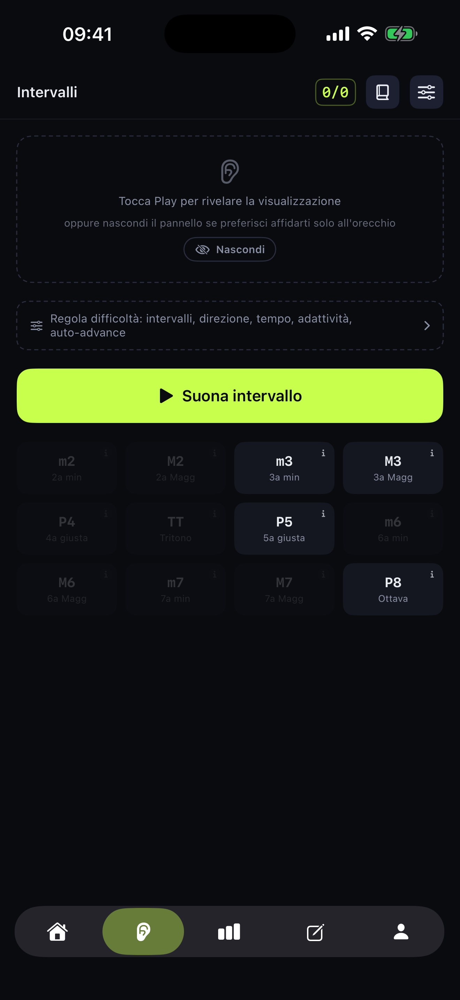
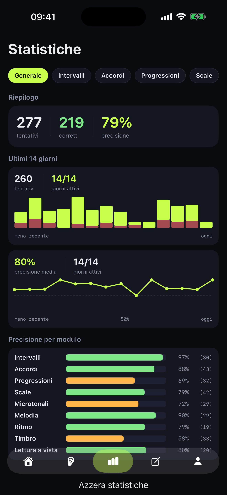
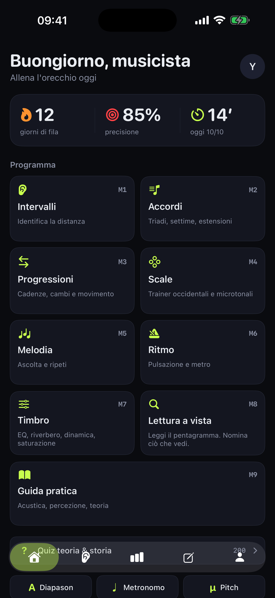
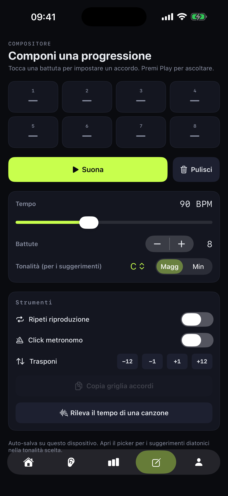
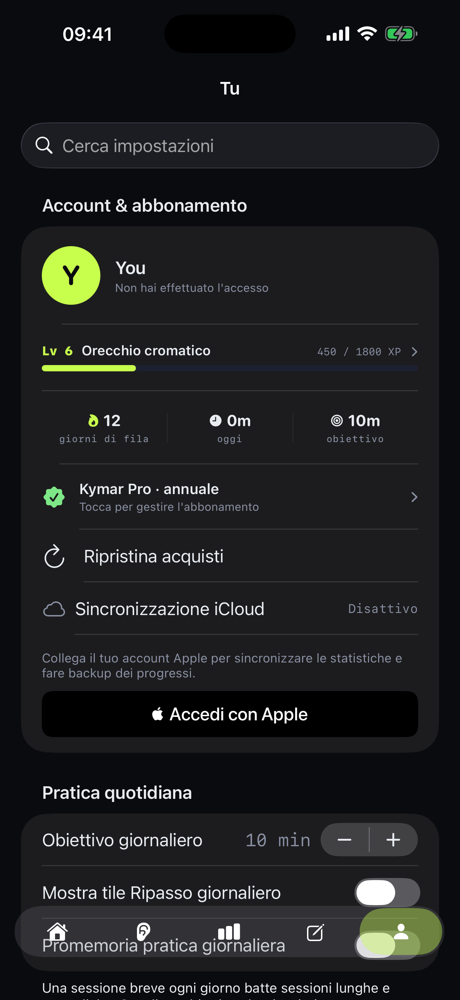

Strumenti di livello studio.
Pianoforte registrato, chitarra classica, archi, ottoni — non bip di sintetizzatore. Ti alleni sugli stessi timbri che suonerai, così quello che impari si trasferisce dritto sul palco.
Intervalli, accordi, melodie, ritmo e timbro — per musicisti che vogliono dati, non gadget.

La maggior parte degli ear trainer si ferma a quiz e streak. Kymar è costruita intorno a quattro idee che, insieme, ti portano da esecutore a musicista.
Pianoforte registrato, chitarra classica, archi, ottoni — non bip di sintetizzatore. Ti alleni sugli stessi timbri che suonerai, così quello che impari si trasferisce dritto sul palco.
Trascina accordi su una timeline di 8 battute, ascoltali a qualunque tempo. Il pad Componi diventa anche uno strumento per esercitarti sulle tue progressioni — non un mazzo chiuso di flashcard.
35 capitoli della Guida pratica — circolo delle quinte, modi, famiglie di accordi, microtonalità. Ognuno è interattivo: tocca un grado, ascolta un accordo, trascina una scala. Leggi meno, tocca di più.
Dalle seconde minori al maqam. Ogni esercizio è valutato e collocato rispetto a dove sei — così i prossimi cinque minuti sono sempre i cinque minuti giusti per te. Niente grind, niente plateau.
Cinque tab, una routine. 5 minuti al giorno di esercizi mirati ai concetti dietro la musica.




Ogni modulo è un esercizio autoconsistente con la sua curva di difficoltà. Scegli un modulo, fai una sessione di 5 minuti, vedi cosa hai confuso.
Senti la distanza tra due note — da m2 a P8, ascendenti, discendenti o armonici.
Maggiori, minori, diminuiti, aumentati — fino a 7e, 9e e rivolti.
Cadenze, ii-V-I, scambio modale. Senti il movimento, non solo gli accordi.
Maggiori, minori, modi — e tradizioni microtonali: maqam, raga, gamelan.
Trascrivi frasi brevi a orecchio — scalari o liberamente cromatiche.
Ribatti pattern — dai beat semplici ai metri composti e poliritmie.
Identifica EQ, compressione, saturazione — l'orecchio del produttore, su tap.
Leggi le note sul pentagramma a tempo — chiave di violino, basso e doppio rigo.
€0
€3,99/mese
oppure €19,99/anno (risparmi il 58%) · €24,99 a vita
1 settimana gratis, poi disdici quando vuoi
Sì — al momento Kymar è solo iOS (iOS 17 o successivo, iPhone e iPad). La versione Android è nella roadmap; il progetto è un indie dev singolo, quindi iOS viene prima.
Sì, per sempre. Tutti e 8 i trainer, il Warmup guidato, la streak giornaliera e la Guida pratica da 35 capitoli sono gratis. Pro aggiunge 8 strumenti in più (9 in totale), input tastiera MIDI, sync iCloud, statistiche dettagliate per sessione, ripasso a ripetizione dilazionata, il trainer microtonale con le sue guide su maqam/Hindustani/Carnatica/gamelan — e rimuove la pubblicità.
Sì. Per default le stats restano sul tuo dispositivo — nessun server di Kymar le raccoglie. Il sync iCloud (Pro) usa il tuo account iCloud, end-to-end attraverso l'infrastruttura di Apple. Dettagli nella privacy policy.
Sì. I piani Pro Mensile e Annuale si rinnovano automaticamente finché non li disdici — gestiscili da Impostazioni → ID Apple → Abbonamenti. Pro A vita è un acquisto unico, nessun rinnovo. La prova gratuita di 1 settimana non addebita nulla se disdici prima della scadenza.
No. La maggior parte dei trainer (Intervalli, Accordi, Melodia, Ritmo, Timbro) funziona puramente a orecchio e tocco — niente notazione richiesta. La Guida pratica e le visualizzazioni opzionali sul pentagramma sono lì se vuoi collegare orecchio e pagina.
Sì, su Pro. Controller MIDI via USB, Bluetooth o rete vanno direttamente nei trainer, così rispondi agli esercizi di accordi e intervalli su una tastiera vera invece che toccando lo schermo.